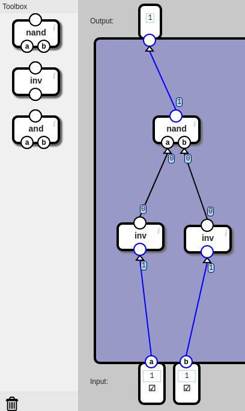
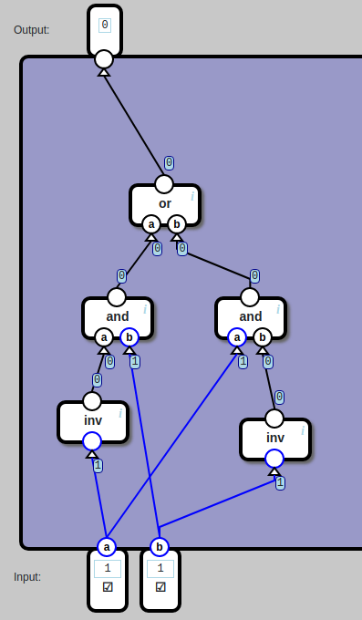
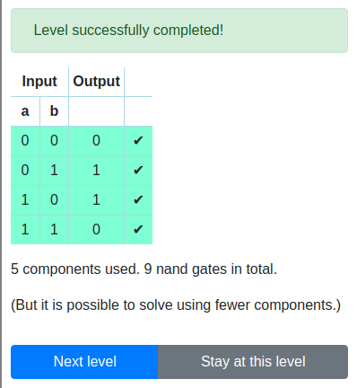
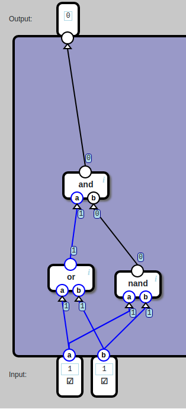
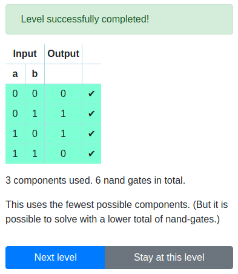
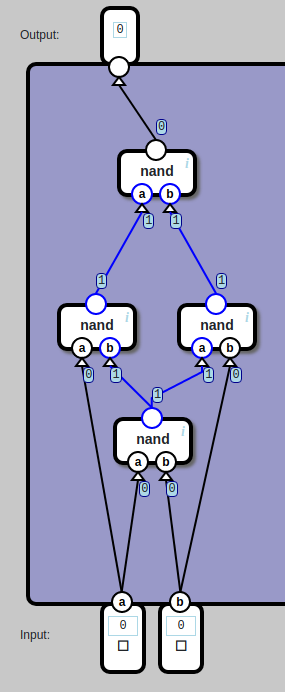
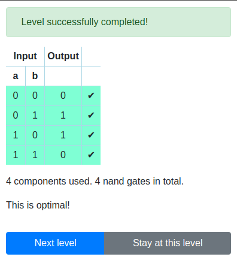
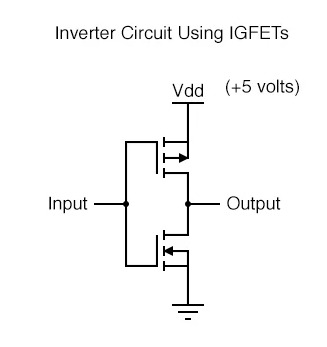

http://nandgame.com/ 第 3 题, 用 nand, inv, and 实现 or

这题也是需要推理的, 推理过程很有趣
| a | b | out |
|---|---|---|
| 0 | 0 | 0 |
| 0 | 1 | 1 |
| 1 | 0 | 1 |
| 1 | 1 | 1 |
首先定义
$$
\begin{equation}
f(a, b) = 1
\end{equation}
$$
那么 f(a, b) 等于
(not(a) and b) or
(a and not(b)) or
(a and b)
由于不允许使用 or, 所以先关注 (not(a) and b) 看如何调整
a, b, not 的组合有四种情况
发现前 3 行分别对应 f(a, b) 的三行定义, 所以
$$
\begin{multline*}
f(a, b) = not(not(a)\quad and\quad not(b))
= not(a)\quad nand\quad not(b)
\end{multline*}
$$
所以就有了本文第一张图.
其他函数的推理方式也是这样, 先用 or 将结果为 1 的表达式先罗列出来, 再想办法归约.

结果

改成


最优解： https://cs.stackexchange.com/questions/43342/how-to-construct-xor-gate-using-only-4-nand-gate/43344
根据布尔运算法则(Boolean Identities), 推理过程如下：
f(a, b) = (not(a) and b) or (a and not(b))
= not
(
not(a) and not(b)
or
a and b
)
# DeMorgan‘s Laws
= not(not(a) and not(b)) and not(a and b)
# DeMorgan‘s Laws
= not(not(a or b)) and not(a and b)
= (a or b) and not(a and b)
= not(a and b) and (a or b)
# Distributive Laws
= (not(a and b) and a) or (not(a and b) and b)
# DeMorgan's Laws
= not
(
not(not(a and b) and a)
and
not(not(a and b) and b))
)
= not
(
((a nand b) nand a)
and
((a and b) nand b)
)
=
(
((a nand b) nand a)
nand
((a and b) nand b)
)

是最优解

上面的推理主要是围绕构造 not(a and b) (也就是 (a nand b)) 进行
为什么要将 nand 设置为 primitive, 难道工艺更简单吗? 可能是, 看了一天 Digital Design and Computer Architecture 第一章和其他入门资料, 我的结论是 NAND/MOR gate 比其他逻辑门花销少

NOT 应该是最简单的构造, 一个 nMOS 一个 pMOS, Input = 0 的时候, 上面的 pMOS 是通的, 所以 Output = 1.
NAND 比 NOT 要多 2 个 MOSFETs, 但问题是, 把一个输入绑定到 NAND 的 2 个引脚就实现了 NOT, 所以没有必要单独再买一个 NOT.
引用 nand2tetris 的 FAQ:
Student: So the first question of the day is : is it possible to build a computer starting with a logic gate other than NAND?
Professor: Well I'll take this question and the answer is indeed yes, it's possible. For example, you can use another elementary gate called NOR, which stands for not or, and base your entire computer on this atomic building block.
Likewise, it is quite natural to start with the suite consisting of and, or and not gates and use them to build a system.
And there are a number of other possibilities. And in fact it's quite similar to the way geometry can be founded on different sets of axioms.
And each one of them can be yet another point of departure to build, you know, all the power and theorems of geometry.
This is not such a bad analogy. However, it turns out that NAND gates are very popular in physical implementations of hardware systems. Because there are many integrated circuit technologies in which it is quite cheap or relatively cheap to build NAND gates. As you well know during the course during the first week, we treated these NAND gates as black box abstractions.
布尔代数运算有一套方法论, 前面说的用 OR 将结果为 1 的表达式联合起来的方法, 被称为 sum of products canonical form, 除此之外还有 product of the sum form, 将所有“结果为 0”的 maxterm 用 AND 联合起来.
A maxterm is a sum involving all of the inputs to the function.
A minterm is a product involving all of the inputs to the function.
sum 相当于 OR 运算, product 相当于 AND.
最后, 还有一套 k-map 理论, 详情看教材 Digital Design and Computer Architecure.